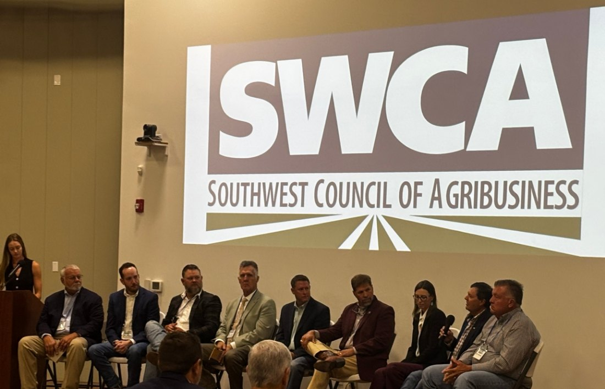
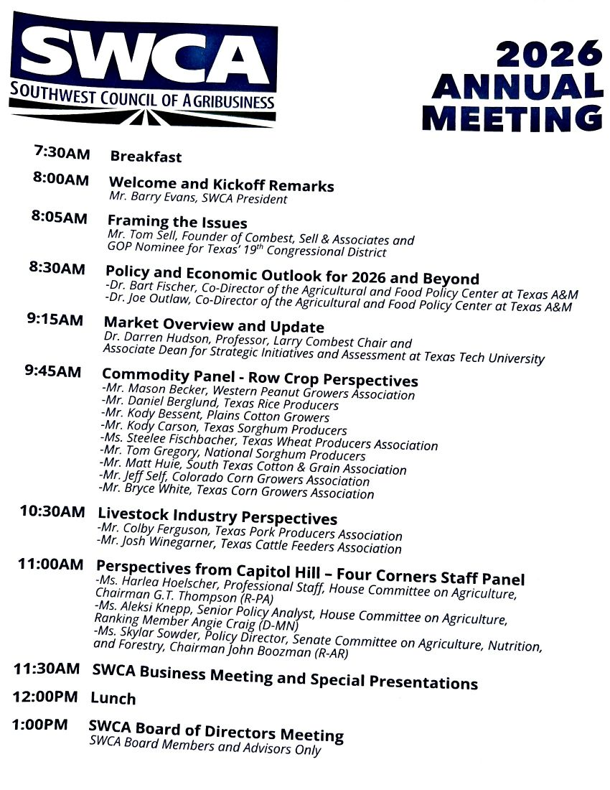
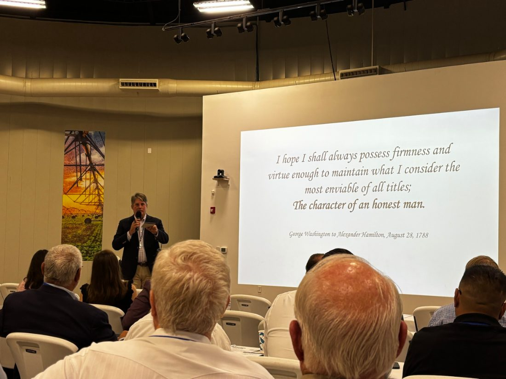
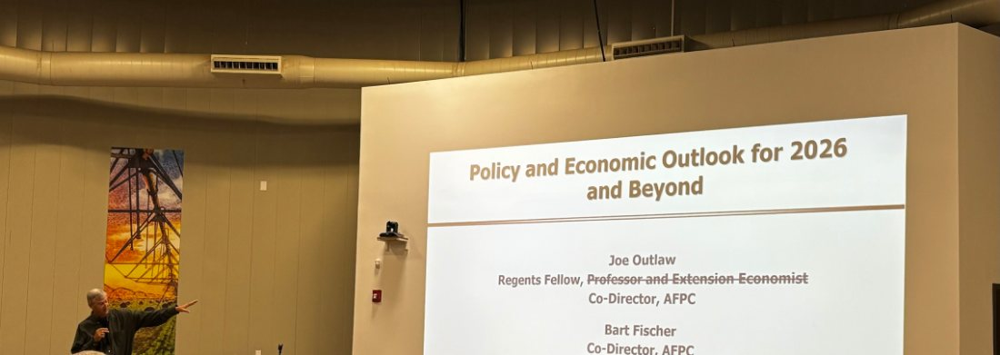
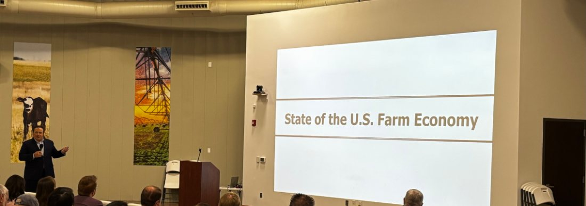
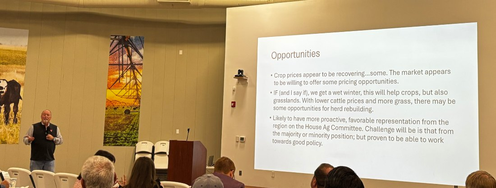
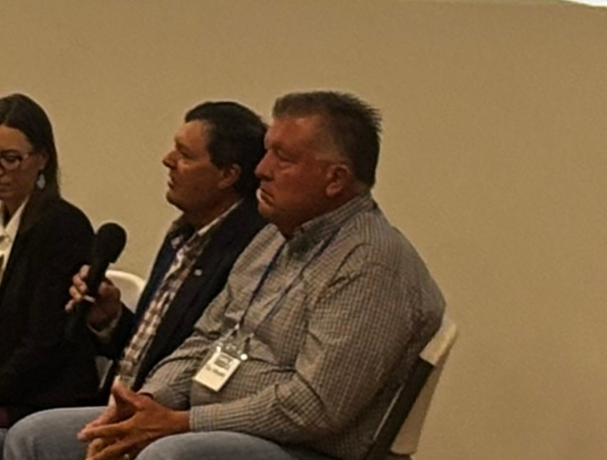
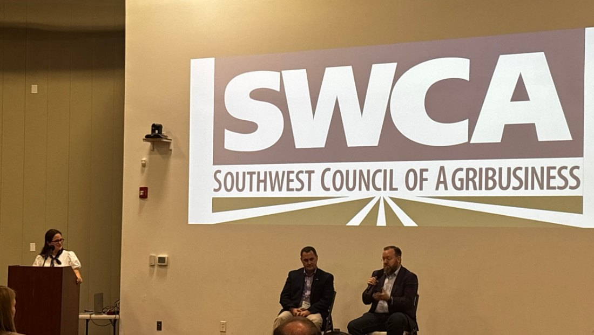

CCGA at the SWCA Annual Meeting
Posted September 25, 2026
CCGA President Jeff Self represented Colorado corn on the Commodity Panel — Row Crop Perspectives at the Southwest Council of Agribusiness annual meeting, alongside cotton, sorghum, wheat, rice, peanut and corn leaders from across the region. CCGA is affiliated with SWCA, and that affiliation is the reason Colorado has a seat at tables like this one.


Framing the Issues

The Outlook Sessions
The morning belonged to the economists. Dr. Joe Outlaw and Dr. Bart Fischer co-direct the Agricultural and Food Policy Center at Texas A&M, which runs the representative farm modelling Congress leans on when it wants to know what a policy change does to an actual operation rather than to an average. AFPC also publishes the free ARC/PLC decision aid growers can use to work their own 2026 election before it closes on December 11.


The timing was not incidental. That session landed in the same week the first ARC and PLC payments carrying the higher reference prices begin moving, and five days before the farm bill extension expires. What those payments look like on Colorado ground is worth reading alongside it.
The Market Overview
Dr. Darren Hudson followed them at 9:15 — Professor, Larry Combest Chair and Associate Dean for Strategic Initiatives and Assessment at Texas Tech University. His slide was headed Opportunities, which is not the word the last two years have earned, and he was careful about how much weight it could carry.

Three points, in his framing:
- Crop prices appear to be recovering — some. The market appears to be willing to offer some pricing opportunities.
- If the region gets a wet winter, that helps crops and it helps grasslands. With lower cattle prices and more grass, there may be some opportunities for herd rebuilding.
- The region is likely to have more proactive, favorable representation on the House Agriculture Committee. Whether that comes from the majority or the minority position is the open question, but the region has proven able to work toward good policy from either.
The qualifiers are the content. “Some” pricing opportunities is not a rally, and a wet winter is a forecast, not a plan — it is worth marking that a pricing opportunity you can act on is one you have already decided the number for. The grass point reaches further into Colorado than it first sounds: dryland corn country and grazing country are the same country here, and a wet winter that fills stock ponds on the eastern plains does both jobs at once.
None of it changes what is in front of growers this fall. The September 30 SDRP deadline and the December 11 ARC/PLC election are decisions with dates on them; the market overview is the weather you make them in.
What Colorado Took to the Panel

Two things, when the microphone came down the row.
The first was regulation, and where it comes from. A growing share of what Colorado corn growers spend their advocacy on now starts at the Front Range and lands on the eastern plains — pollinator measures, restrictions on treated seed, and a list that gets longer every session. That is time and money spent defending practices that are already standard, and it is spent by the same people who are trying to farm.
The clearest example this year was SB26-065, which would have required a third-party verifier to certify that neonicotinoid-treated seed was necessary before a grower could plant it — a prescription for seed, on an operation that plants sections at a time. It was postponed indefinitely in the Senate Agriculture and Natural Resources Committee on February 26 by a vote of five to two, with members of both parties in the majority. The bill is dead; the argument behind it is not.
On September 16 the Governor signed an executive order on pollinators. Read it before repeating anything about it: it directs state agencies to build a pollinator strategy, to prioritize pollinator-friendly pesticides or none at all on state lands, and to support local governments and private landowners who want to plant habitat. It does not regulate private farmland. What it does do is keep the question open, which is why the panel was talking about it nine days later.
The second thing was thanks. Jeff thanked SWCA for the chance to serve and for being an organization that does real work for the American farmer — and, specifically, for the people in it who understand that farming in the West is not farming in the Corn Belt. Dryland acres, water that has to be fought for, heat that shows up as a disaster claim rather than a yield drag: those are the conditions this council was built around, and they are not the conditions national policy gets written for by default.
The two points are the same point. Rules written where corn is a reliable crop, for a climate where it is, arrive on Colorado ground as a cost. Somebody has to be in the room to say so.
No One-Size-Fits-All
The panel as a whole kept returning to the same diagnosis: the farm economy is in peril, and it is in peril from both ends at once. Input costs are high and commodity prices are low, and nine commodities in one row of chairs had the same story about it.
The arithmetic is not subtle. USDA forecasts the average cost of putting in an acre of corn in 2026 at roughly $917, about $27 an acre more than last year. At national average yields that is north of $5 a bushel just to break even. USDA’s September WASDE put the 2026/27 season-average price at $4.80 — and that was after raising it thirty cents on a smaller crop. A price that improved is still a price below the cost of growing it.
Those are national figures, and they travel badly onto Colorado ground in the direction that hurts. Dryland acres do not make national average yields. The same cost per acre divided over fewer bushels is a wider gap, not a narrower one, which is why a national average that looks survivable on paper can be a loss out here.
So the conversation turned to policy, and to the part that is harder than describing the problem: how to shape it, and how to get policymakers to write it so that it reaches producers in the West and not only the places with the most acres. That is a different job from asking for help. It means being in the room early, while language is still being drafted, rather than arriving afterward to ask for an exception.
Which is the line the panel came back to, and the one worth carrying home: there is no one-size-fits-all policy for producers in America. A program calibrated to a Corn Belt operation is not neutral when it lands in eastern Colorado — it is a program that quietly assumes rainfall, yields and a crop mix that are somebody else’s. That is the argument behind a permanent disaster title, behind the higher-of ARC-or-PLC choice being a real choice rather than a formality, and behind the excessive heat case that moved Colorado from 24 drought counties to statewide eligibility.
Cost and price figures are USDA’s: the 2026 cost-of-production forecast and the September 2026 WASDE. CCGA administers no USDA program.
The Livestock Session Is a Corn Story
At 10:30 the council turned to livestock. Colby Ferguson of the Texas Pork Producers Association and Josh Winegarner of the Texas Cattle Feeders Association updated the room on where the industry stands.

Two things carried the session.
Proposition 12. California’s housing standards for pork survived the Supreme Court in 2023, and the Court declined to take up another challenge in June, so the fight has moved to the farm bill. The House bill carries language barring states from enforcing production standards beyond their own borders — it would not repeal Prop 12 inside California, but it would stop one state’s rules from setting the terms for producers everywhere else. The Senate Agriculture Committee’s version contains no such language. The two go to conference with that difference unresolved.
That is a pork fight, and corn is not in it. The principle underneath it is the same one this page has been circling all day: whether production standards written in one place, for conditions in that place, get to travel. A Colorado grower watching the Front Range write rules for the eastern plains is watching a smaller version of the same question.
New World screwworm. Winegarner commended the administration for the response, calling USDA’s handling of the outbreak quick and effective. The scale is on the record: more than a billion sterile flies released along the border, roughly 100 million a week going out across Texas and Mexico, a renovated plant at Metapa ramping toward another 100 million, and a South Texas facility designed for 300 million a week. Ports have been reopening to Mexican cattle on a science-based protocol — Douglas, Arizona on August 24, and Santa Teresa, New Mexico on September 24, starting at several hundred head a day.
Secretary Rollins has been plain that eradication has not been achieved, which is why the monitoring continues: drone flights, traps along the border, and more than 110,000 wildlife animals checked, with no screwworm found in monitored wildlife. For cattle feeders the reopening matters directly, because feeder supply out of Mexico is part of how yards stay full.
Corn growers have a direct stake in that session, because feed is where most of this country’s corn goes. A feedyard is a corn customer, and the cattle numbers are a demand forecast whether anyone calls them one.
USDA’s September Cattle on Feed report is the one to read. Feedlots held 11.2 million head on September 1, up one percent from a year ago — steady on its face. The forward-looking line is underneath it: August placements came in at 1.62 million head, down nine percent, the lowest August since the series began in 1996. Marketings were the lowest August on record too. Cattle already on feed are still eating; the ones that would replace them are not showing up.
Behind that is a beef cow herd at its cycle low, and a rebuild that keeps getting pushed out a year. The economics are circular in a way that is hard to escape: while calf prices stay this strong, a producer is paid more to sell a heifer than to keep her, so the retention that would eventually grow the herd is the thing the market is bidding against. Dr. Hudson made the same point in the morning from the other side — that it takes softer cattle prices and a wet winter’s grass to make rebuilding pencil.
For a Colorado corn grower the read is straightforward, and it is not cheerful. Cattle feeding is one of the few places where our corn does not have to travel to find a buyer. Fewer cattle entering yards now is less grain demand later, arriving on top of a season-average price already sitting below the cost of production. It is the same squeeze the commodity panel described, reaching corn through the feedbunk instead of the elevator.
Cattle figures are from USDA’s September 2026 Cattle on Feed report; screwworm response figures are USDA’s. Speakers’ assessments are their own. CCGA administers no USDA program.
Why the Room Mattered
The agenda also carried a Capitol Hill staff panel with senior staff from both the House Agriculture Committee and the Senate Agriculture Committee — including the policy director for Chairman John Boozman, whose committee advanced the Agricultural Act of 2026 to the Senate floor the week before. The Senate is not expected to take the bill up until after the midterms, which makes the weeks in between the ones where positions get set.
That is the argument CCGA has been making all year: a permanent disaster title written into the farm bill, rather than another round of ad hoc aid after the fact.
The Affiliation Has Paid Before
It was the “excessive heat” case made through SWCA that expanded Colorado’s disaster eligibility from 24 drought counties to statewide coverage. Every Colorado producer filing before the September 30 SDRP deadline who sits outside those original counties can do so because of that argument.
What is on the line in the next five days →
Speakers are identified as the meeting programme lists them. CCGA takes no position on candidates or elections.